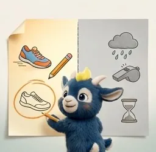
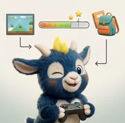
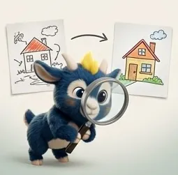
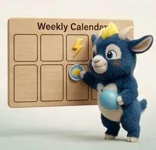
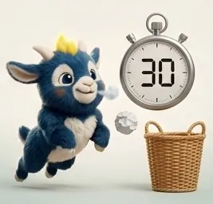
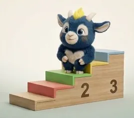
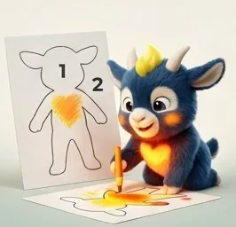
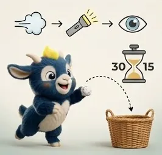
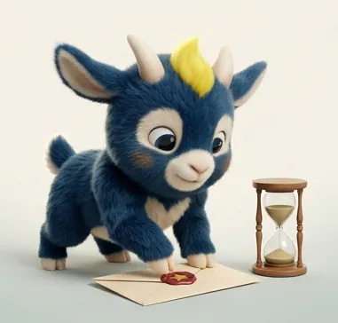

Tout le parcours
13 semaines · 53 activités. Les trois premières de chaque semaine suffisent ; les autres vont plus loin.
Semaine 1 · Reconnaître ses forces
Faite
Les trois choses
10 · 20 · 30 min
Dix minutes, tu décides
10 · 20 · 30 min
Ton rêve de l’année
10 · 20 min
Les forces qu’on ne voit pas
10 · 20 · 30 min · bonus
Semaine 2 · Objectif de résultat, objectif d’effort
Faite
Ce qui dépend de toi
10 · 20 · 30 min
La première marche
10 · 20 · 30 min

Comme dans un jeu vidéo
10 · 20 min

La loupe
10 · 20 · 30 min · bonus
Semaine 3 · Les preuves
Faite
Le mur des impossibles
10 · 20 · 30 min
Le défi une fois sur trois
10 · 20 · 30 min
L’histoire du raté
10 · 20 min
Même si j’ai peur
10 · 20 · 30 min · bonus
L’échelle du courage
10 · 20 · 30 min · bonus
Semaine 4 · Les six émotions
Faite
La roue des six
10 · 20 · 30 min
La tour qui tombe
10 · 20 · 30 min

Où je l’ai déjà sentie
10 · 20 min
Le monstre du trac
10 · 20 · 30 min · bonus
Semaine 5 · La respiration et la phrase
Faite
Deux outils, tu choisis
10 · 20 · 30 min
La revanche de la tour
10 · 20 · 30 min

Là où ça monte
10 · 20 min
Les phrases qui relèvent
10 · 20 · 30 min · bonus
Semaine 6 · Le corps qui se pose
Faite
Spaghetti cru, spaghetti cuit
10 · 20 · 30 min

Cinq lancers, trente secondes
10 · 20 · 30 min

Avant le grand moment
10 · 20 min
La posture d’avant
10 · 20 · 30 min · bonus
Semaine 7 · Se mesurer à soi
FaiteLe podium des progrès
10 · 20 · 30 min

Où en est ton escalier ?
10 · 20 · 30 min
Ce que j’ai vu changer
10 · 20 min
·
Le carnet des victoires
10 · 20 · 30 min · bonus
Semaine 8 · Sur qui je compte
En cours
Mes trois personnes
10 · 20 · 30 min

La cabane impossible
10 · 20 · 30 min

La demande de la semaine
10 · 20 min

Le chapeau des talents
10 · 20 · 30 min · bonus
Semaine 9 · Choisir où on regarde
Le projecteur
10 · 20 · 30 min
Quinze secondes, ton mot
10 · 20 · 30 min

La prochaine fois en classe
10 · 20 min
Semaine 10 · Revivre de l’intérieur
Le film au ralenti
10 · 20 · 30 min
Vois-le, fais-le
10 · 20 · 30 min
Te voir le faire bien
10 · 20 min

La carte de la fierté
10 · 20 · 30 min · bonus
Semaine 11 · Nommer ses outils
L’inventaire
10 · 20 · 30 min

La routine complète
10 · 20 · 30 min

Où ailleurs
10 · 20 min
Le tirage du matin
10 · 20 · 30 min · bonus
Et si… ?
10 · 20 · 30 min · bonus
Semaine 12 · Contribuer
La mission secrète
10 · 20 · 30 min
Prof d’un jour
10 · 20 · 30 min
Qui d’autre en a besoin ?
10 · 20 min
La mission de grand
10 · 20 · 30 min · bonus
Semaine 13 · Le regard du parent

Ce que j’ai vu
10 · 20 · 30 min

La lettre à ouvrir dans un an
10 · 20 · 30 min

Ce que tu gardes
10 · 20 min
Bonus · en famille

Le blason de la famille
10 · 20 · 30 min
9:41